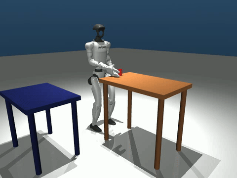

The Challenge: Beyond the Keyboard
The starting point was a manual MuJoCo demo: the Unitree G1 humanoid stood in a scene, waiting for keyboard inputs to walk or reach. For a staff engineer, the goal wasn't just to make it work autonomously once—it was to build a modular, debuggable, and robust baseline that separates perception, locomotion, and manipulation.
The result is a 12-state Finite-State Machine (FSM) that achieves a 100% success rate in deterministic simulation, backed by a methodology that treats simulation instability and "false-positive success" as first-class engineering problems.
The Breakthrough: Taming the "Ghost in the Machine"
The most significant engineering hurdle wasn't the walking or the reaching—it was the transition from kinematic to physical reality. During early autonomous runs, the robot would successfully reach the target table, only to "break the scene" with NaN errors the moment it released the cylinder.
By introducing a delayed collision restoration (giving the fingers time to physically clear the object before restoring contact physics) and Sweet-Spot Navigation (positioning the robot so the right arm works in its optimal workspace), we moved the baseline from "visually successful sometimes" to robustly verified.

Autonomous transport phase (GIF highlight)
Engineering Philosophies Applied
- Modularity as a Safety Net: The FSM is entirely decoupled from the controller, allowing us to swap the GT pose lookup for a "Visual Oracle" perception layer without changing a single line of state logic.
- Evidence-First Development: No threshold was guessed. Every value—from
the 12cm reacher accuracy floor to the 15-tick release delay—is derived from empirical
data logged in our
DEV_LOG.md. - Honesty about Shortcuts: We explicitly label kinematic grasping as a simulation shortcut, focusing our engineering effort on the sequencing and locomotion composition that are harder to solve.
Reviewer's Deep Dive
Whether you have 3 minutes or 30, this report is structured to provide value at every level of depth.
Video Walkthrough
The final autonomous G1 run, recorded head-to-tail in MuJoCo.
Results & Milestones
What was built, what is proven by code, and where the caveats lie.
Lessons Learned
The "normalization trap," the "always-on reacher," and the NaN stability fix.
Architecture
The FSM-Policy-Controller stack and the Visual Oracle perception design.
Code Audit
File-by-file breakdown of the implementation, annotated for reviewers.
VLA Roadmap
How OpenVLA-style policies could be tested safely through a staged action-adapter branch.
Project Artifacts
- Implementation Repository: g1-manipulation-challenge-v2
- Demo Walkthrough: In-Depth Sequence Walkthrough
- Technical Write-up: G1-Pick-Place-Analysis.pdf